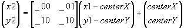

#include <nitro/gx/g2.h>
void G2S_SetBG3Affine(
const MtxFx22 * mtx,
int centerX,
int centerY,
int x1,
int y1
);| mtx | Conversion matrix |
centerX |
x-component of the coordinates of the center of rotation |
centerY |
y-component of the coordinates of the center of rotation |
x1 |
x-component of the coordinates before rotation |
y1 |
y-component of the coordinates before rotation |
None.
This function sets the sub 2D Engine's BG3 affine transformation. The point (x2, y2) after affine transformation is obtained with the following formula:

02/09/2004 Initial version
CONFIDENTIAL